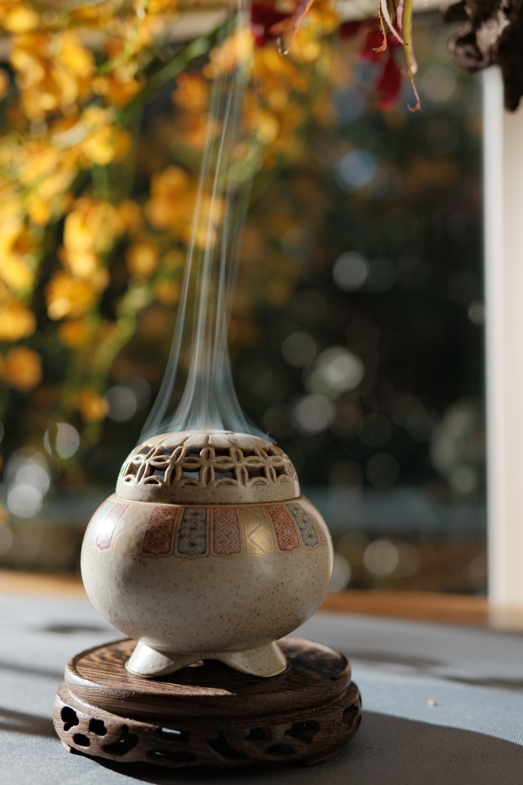

Our Philosophy
Stillness is cultivated.
Zhioise brings tea, incense and seasonal awareness into contemporary life without turning them into spectacle.

Tea slows the body.
Incense settles the mind.
Ritual creates a place to return.
青止 · Zhioise
“Qing” carries freshness and living growth. “Zhi” suggests stillness, pause and inner steadiness. Together, the name holds a simple wish: that quiet may take root in ordinary life.
Natural Materials
We value material honesty, restrained fragrance and traditional aromatic knowledge.
Slow Craft
Objects and experiences are shaped with patience rather than urgency.
Seasonal Rhythm
The year offers a natural structure for tea, fragrance and self-care.